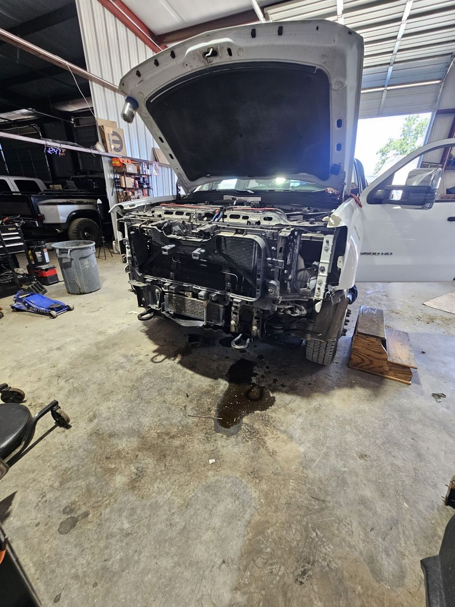
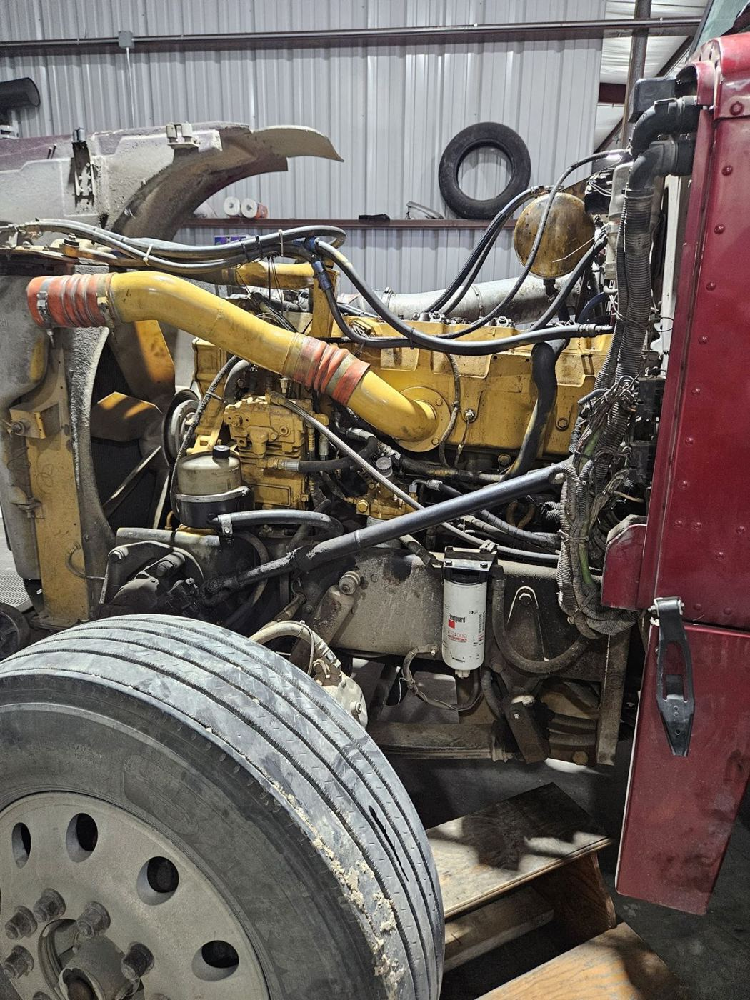
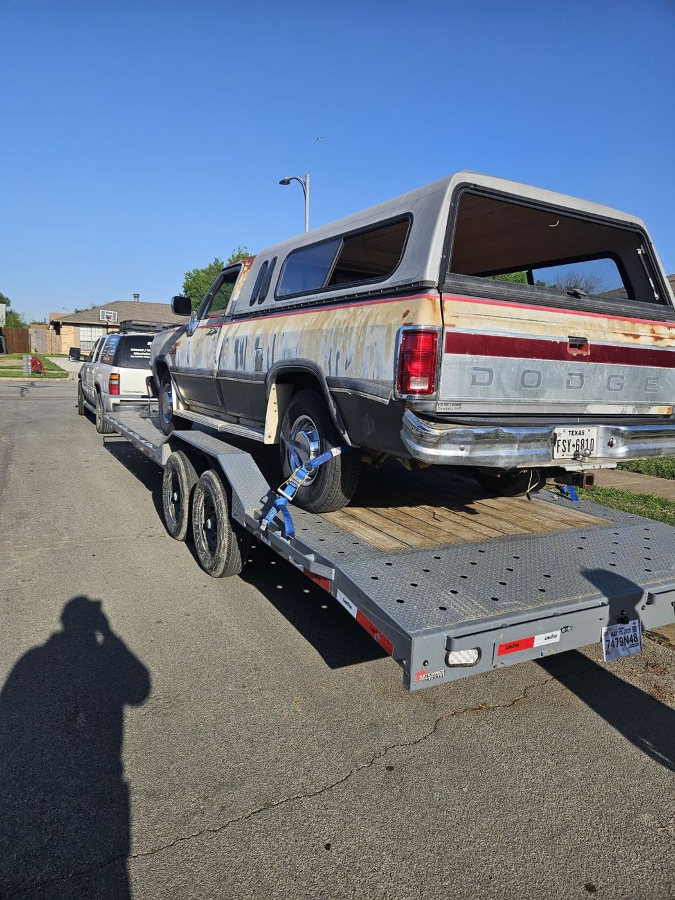
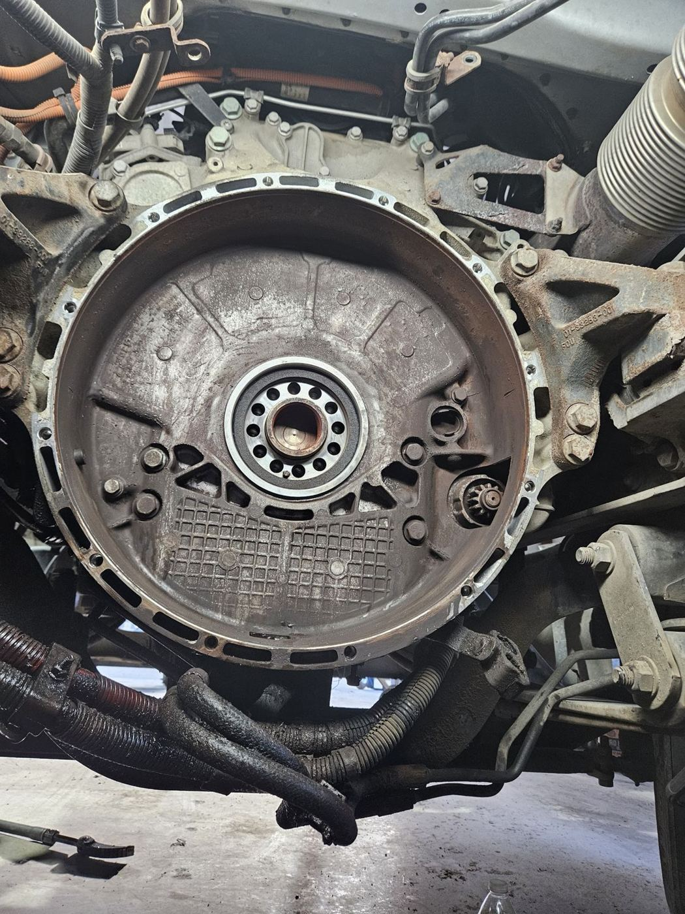
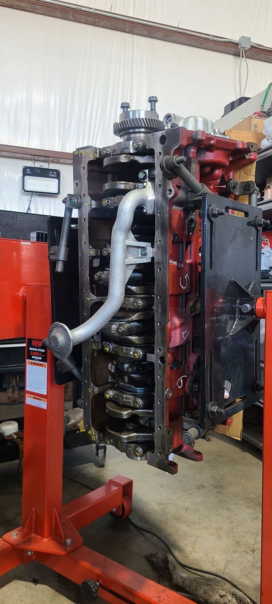
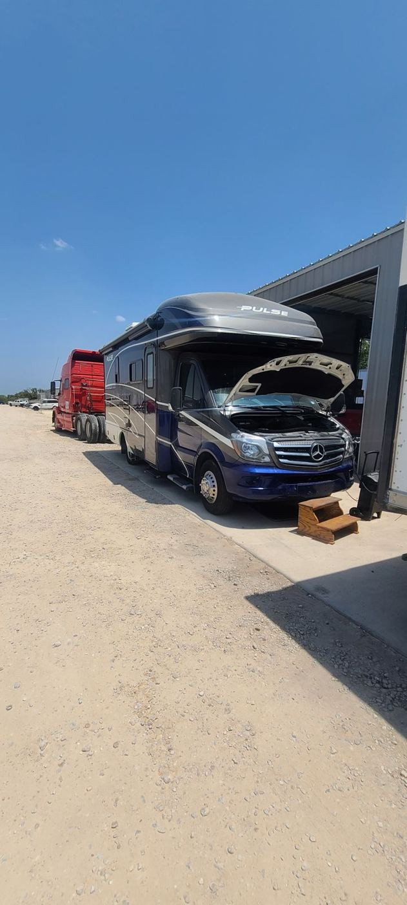
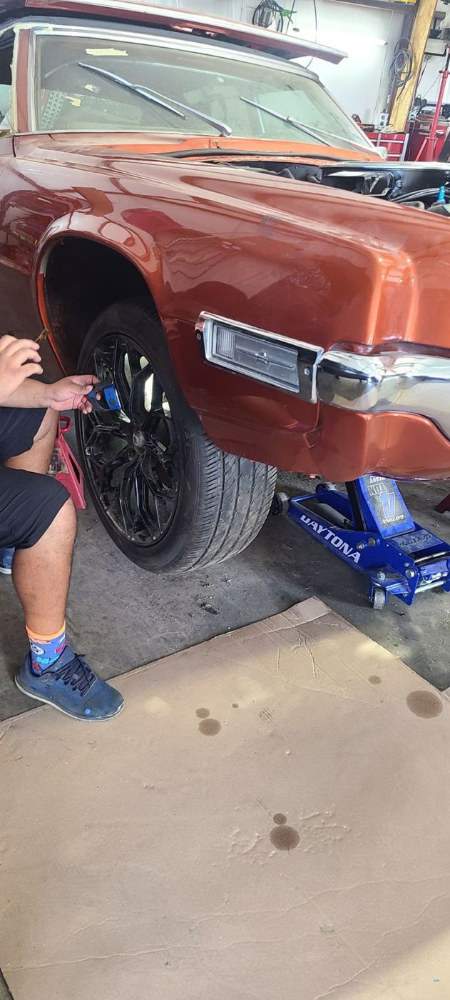
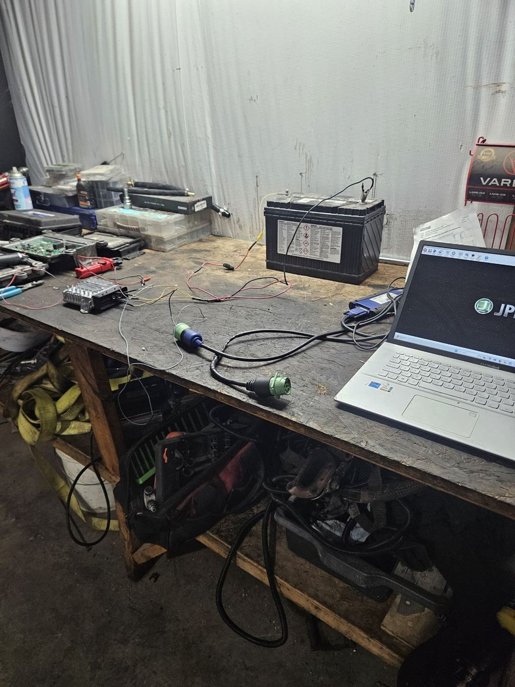

Work order · Fort Worth, TX · Veteran-owned
Dieseltruck repairdone right.
- 4.9★
- Reviews
- 40
- Hours
- M–F 8:30–5
How the shop works

Diagnose first
Reviewers say Rick listens, thinks it through and finds the real problem, like a sensor issue that wasn’t the transmission they feared.

Diesel know-how
“Honest, knowledgeable people who truly know these trucks,” wrote a 6.0 Powerstroke owner.

Back on the road
“Will go above and beyond to get your truck back on the road ASAP.”
Shop floor






Inspection report: customers
Google review
Excellent diesel shop with honest, knowledgeable people who truly know these trucks. I reached out about an issue with my 6.0 Powerstroke and got straightforward, experienced guidance without any pressure or upselling — just real help from someone who clearly takes pride in doing things right. You can tell integrity matters here, which is rare these days. Also appreciate that this is a veteran-owned business that stands behind its work and reputation. I wouldn’t hesitate to trust them with my truck and highly recommend them to anyone needing quality diesel service.
Google review
Rick is truly one of a kind. Not only is he an excellent and knowledgeable mechanic, but he is also an honest, patient, and genuinely good person, which is rare to find these days. I was dealing with what looked like a serious drivetrain issue, and Rick took the time to listen, think critically, and guide me in the right direction instead of jumping to expensive conclusions. Because of his recommendation and professionalism, the real issue was identified quickly and it turned out to be a simple service-related sensor issue, not a transmission problem. Rick’s integrity, experience, and…
Google review
My boyfriend recently visited Rick’s Diesel Truck Repair and he was blown away by their customer service and expertise. Initially it was going to take up to 2 weeks to see his truck but they went above and beyond to fit him in. Not only did they diagnose the issue but he flagged some other issues - not in a way that was pressuring him to fix it all now but as a heads up to maintain his truck long term. They were friendly, efficient, knowledgeable, courteous and transparent. He wanted to gate keep the shop but figured he’d do a kindness to society and recommend the best repair shop around.